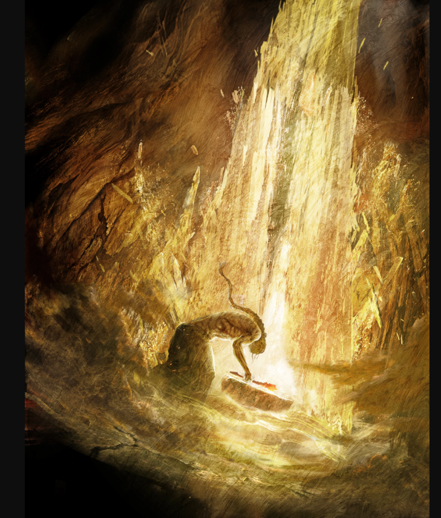

Há muito tempo, o mundo de Elden Ring era governado pela Grande Árvore, uma entidade poderosa que mantinha o equilíbrio entre as forças do caos e da ordem. O Elden Ring, uma manifestação do poder divino que regia o mundo, era o elo entre todos os reinos e seres. Ele mantinha a paz e a prosperidade, sendo protegido por uma linhagem de deuses conhecidos como os "Sem-Deuses" e seus herdeiros.
No entanto, uma cataclísmica traição aconteceu. A Rainha Marika, a governante suprema e imperadora de todas as coisas, que era a guardiã do Elden Ring, se envolveu em um conflito que dividiu a Terra das Nove. O Elden Ring foi quebrado, espalhando suas fragmentações, as "Great Runes", por todo o mundo. Esse evento gerou um vácuo de poder, o que causou o surgimento de vários grupos que lutavam por controle, e o próprio mundo foi mergulhado em um estado de decadência.
A partir da queda do Elden Ring, os Sem-Deuses e outros seres poderosos começaram a brigar pela posse dos fragmentos do Elden Ring. Esse conflito gerou uma era de tumulto, corrupção e guerra, com os fragmentos dando origem a entidades de grande poder, mas também gerando distúrbios e maldições.
